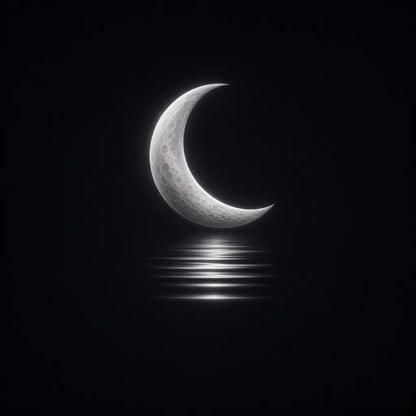

Live chats
See sessions reported by Entire across selected checkouts. Open an OpenCode conversation to follow its recent messages.

Find the right prompt, copy it, and keep work moving.
R3 original art · preserved in both themes
This embeds the existing generated Prompt Library — search, open a P-number, and copy. No second registry and no duplicated prompt text.
Open Moonwake on your workstation to follow chats, scheduled jobs, and execution evidence in one place.
See sessions reported by Entire across selected checkouts. Open an OpenCode conversation to follow its recent messages.
Inspect Windows Task Scheduler jobs and recent firings. See which scheduler and cron feeds are fresh or unavailable.
Read an Entire work receipt to see agent attempts, acceptance results, and observed checkpoints.
The wordmark leads. The approved R3 mark stays subordinate and untouched — ownership remains PR #227.
Night Observatory · Tidal Light · device setting
The public Prompt Library is ready to browse and copy. To see your chats or scheduler activity, start the private Moonwake Observatory from your workstation checkout.